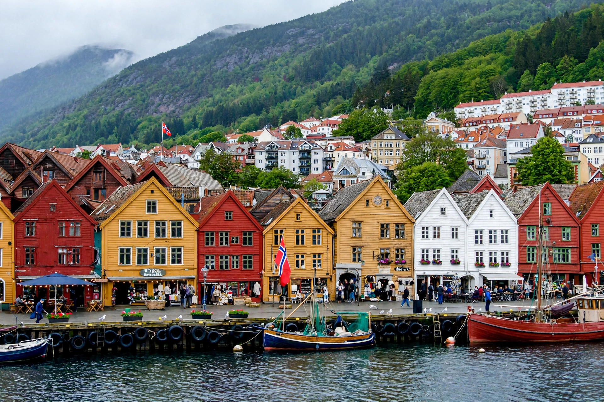

 The Bryggen waterfront in Bergen | |
| Location | Bergen, Vestland, Norway |
|---|---|
| Coordinates | 60.3975° N, 5.3233° E |
| Founded | c. 1070 (wharf); Hanseatic kontor from c. 1360 |
| UNESCO World Heritage Site | |
| Criteria | Cultural: (iii) |
| Designated | 1979 |
Bryggen (Norwegian for "the wharf"), also known as Tyskebryggen ("the German wharf"), is a series of Hanseatic commercial buildings lining the eastern side of the Vågen harbour in Bergen, Norway. It has been on the UNESCO list of World Heritage Sites since 1979.
Bergen was founded around 1070, and its wharf became a centre of trade in stockfish (dried cod) from northern Norway exchanged for grain and goods from Europe. In about 1360 the Hanseatic League established a kontor (trading post) at Bryggen, and German merchants dominated the quarter for roughly the next four centuries, living and working in its distinctive long rows of gabled wooden tenements.
The buildings were repeatedly destroyed by fire — Bergen suffered many great fires — and rebuilt on the same medieval property lines, preserving the quarter's traditional layout. The great fire of 1702 destroyed most of Bryggen; it was rebuilt in the same pattern. After the Hanseatic era ended, the buildings passed to Norwegian merchants, many of them descendants of the Hanseatic families.
A fire in 1955 led to excavations that uncovered extensive medieval remains, now displayed in the Bryggens Museum. The surviving rows of painted wooden warehouses have been restored and house shops, restaurants, artists' studios, and the Hanseatic Museum. Bryggen is Bergen's most famous landmark and a symbol of Norway's medieval trading heritage.